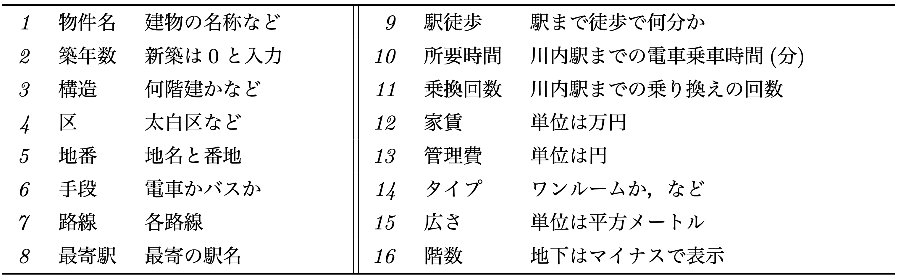

[1] "/Users/inanity/GitVS/SEMdai"[1] "/Users/inanity/Downloads"じゃんけんのデータを作成しましょう。 データSEMdai_Rock.xlsxには， 私が（実際はRの関数sample()が）30回のじゃんけんで出した手が入力されています。
これをダウンロードし，自分と書かれた列に 出した手を入力しましょう。
入力できたらデータをRに読み込みます。 そのために，作業ディレクトリ（working directory）と パッケージ（package）について紹介します。
Rには，作業スペース（working space）という考え方がありました。 「環境」とも呼ばれるここにオブジェクトを登録したり，ここから呼び出したりして分析作業を進めていきます。
同様に，作業ディレクトリ（working directory）では，ファイルにデータを書き込んだり，ファイルから読み込んだりすることができます。ディレクトリはフォルダと同義です。 明示的に指定しなければ，Rがデータファイルなどを探すのは，この作業ディレクトリです。作業スペースが勉強机だとしたら，作業ディレクトリは「机の引き出し」に例えることができます。隠していたマンガ本を取り出したり，作成したノートをしまったりする場所です。
作業ディレクトリの場所を確認するには以下のようにします（macOSを想定）。
[1] "/Users/inanity/GitVS/SEMdai"[1] "/Users/inanity/Downloads"作業ディレクトリに読み込みたいデータのファイルがあれば， “SEMdai_Rock.xlsx”のようにファイル名を指定するだけでOKです。 もちろん，コンピュータ内の正確な場所を指定すれば， 作業ディレクトリがどこであっても読み込み可能です。
データはcsv（comma separated values）形式で配布されることが多く， 各値がカンマで区切られただけのcsvファイルの方が，テキストファイルとして メモ帳などでも開けるのでいいのですが，私が文字化けの問題に疲れ果てた感があり， Excelを利用してしまっています。
Rは，そのままでは拡張子xlsxのExcelファイルを扱えません。 そこで利用するのがパッケージ（package）です。 パッケージは，Rの機能を拡張する関数やデータのまとまりです。 導入するとそれまで不可能，あるいは非常に煩雑であった処理を実行可能になります。 ここでは，Excelファイルを読み込めるようになるreadxlを使います。
パッケージを利用するために必要なことは２つ，インストールと「起動」です。 パッケージを起動することは，「パッケージを読み込む」「パッケージを呼び出す」など のように言われることもあります。
工場出荷時の状態のスマートフォンが元のRで，SNSツールやゲームなど， インストールするアプリがパッケージであると捉えるとよいでしょう。 スマホアプリ（パッケージ）のインストールは一度行えばOKですが， 利用するには都度，指でタップして起動（パッケージの呼び出し）を する必要があります。
パッケージは以下のように簡単にインストール可能です。
Warning: unable to access index for repository https://ftp.yz.yamagata-u.ac.jp/src/contrib:
cannot open URL 'https://ftp.yz.yamagata-u.ac.jp/src/contrib/PACKAGES'Loading required package: readxl関数require()は，library()と 同様に，引数にパッケージの名前を指定すると，そのパッケージを 呼び出す（起動する）ことのできる関数です。 すでにインストールされているパッケージの名称は， オブジェクトのラベルなので，引数に指定する際には 引用符はいりません（文字列として扱う必要がないため ［引用符で囲んでもよい］）。
require()は， パッケージの読み込みに対するステータスに応じて， 真偽値を返し，失敗するとFALSEとなります。
これでパッケージreadxlが使えるようになり， 関数read_xlsx()でExcelファイルが読み込めます。なお，readxl::read_xlsx()という 記法は，パッケージreadxl全体を使用可能にしなくても，その中に含まれるread_xlsx()だけ 使えるようにするものです。
改めてデータを読み込みます。
それでは，じゃんけんの結果を集計してみましょう。
| 自分 | 勝ち | あいこ | 負け | Total |
|---|---|---|---|---|
| グー | 33.3% (3) | 33.3% (3) | 33.3% (3) | 30.0% (9) |
| チョキ | 33.3% (3) | 44.4% (4) | 22.2% (2) | 30.0% (9) |
| パー | 33.3% (4) | 16.7% (2) | 50.0% (6) | 40.0% (12) |
| Total | 33.3% (10) | 30.0% (9) | 36.7% (11) | 100.0% (30) |
| 自分 | 勝ち | あいこ | 負け | Total |
|---|---|---|---|---|
| グー | 30.0% (3) | 33.3% (3) | 27.3% (3) | 30.0% (9) |
| チョキ | 30.0% (3) | 44.4% (4) | 18.2% (2) | 30.0% (9) |
| パー | 40.0% (4) | 22.2% (2) | 54.5% (6) | 40.0% (12) |
| Total | 33.3% (10) | 30.0% (9) | 36.7% (11) | 100.0% (30) |
パッケージjanitorを使いました。 同様の表を作れるでしょうか。
ファイルkawauchi_0819.xlsxは， リクルート社が運営する物件情報サイトsuumo（東北版）から， 2025年8月19日18:13時点でのデータをダウンロードした結果です。
suumoのトップページから「賃貸」をクリックすると， 「通学・通勤時間から探す」という メニューがあります。この機能で 「通勤・通学先の最寄り駅」として「川内(宮城)」を選択し，「電車での所要時間」を「10分以内」 に設定，「乗換回数」は「こだわらない」で検索しました。
検索時点では26,346件の物件が抽出されました。
1ページに50物件を「建物ごとに表示」した状態で，1から71ページまで 以下の16のデータについて読み取った結果です（同じ建物に複数の賃貸物件（部屋）があるため， 「建物ごとに表示」の設定では，1ページに50物件の表示でも50部屋とは限らない）。

同じ物件で情報が重複していた場合（物件名, 区, 地番, タイプ, 広さ, 階数, 家賃, 管理費が同じ物件は，ひとつだけ残した）や， 最寄駅までバスに乗る物件， 階数の表示が非標準的であった物件（3-5階など）を除外した結果， 4,095件の物件に関するデータとなりました。
最寄駅に関わる情報は，物件の最寄駅として最大3つ表示される駅のうち，最初の1つを対象としましたが，川内駅まで0分で到着する物件もあるため，データについてみなさんに意見を伺いたいです。 なお，表示の規則の詳細は不明ですが，対象とした最初の最寄駅が徒歩距離（分単位）で最短というわけでは 必ずしもなさそうです。ただし，短い時間が最初に表示される傾向はあるように見受けられました。
また，階数には欠損値，欠測値（missing value）があります。 元の物件情報では表示が – となっていたデータです。おそらく戸建てだと思われます。 欠測値はExcelファイル上では空欄になっています。
上記のデータを入力したExcelファイル kawauchi_0819.xlsx には， 1列目に，連番を示す「番号」を挿入しています。